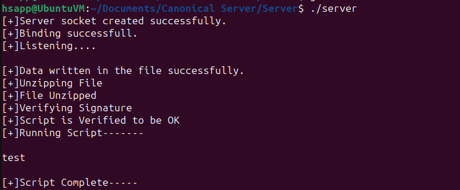
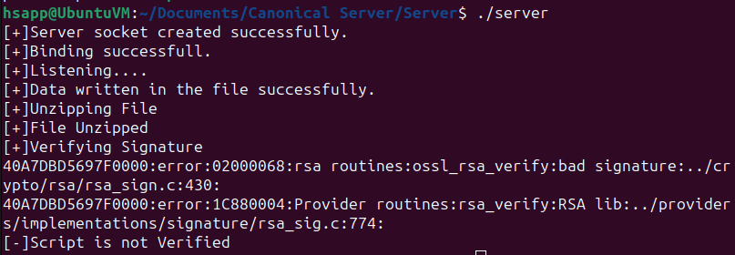
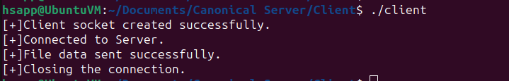

Base socket/file transfer server provided by nikhilroxtomar. Modified to meet needs for a project, the verification of x.509 signatures and then running a script.
Before running the client or server a private and public keypair is needed. In my tests, I used an RSA and sha256 keypair to mimic an x.509 certificate. To generate this keypair the following commands must be ran:
openssl genrsa -out private.pem 4096
openssl rsa -in private.pem -pubout -out public.pem
Before running, signature and script file must be compiled into a tarball using:
tar -czvf files.tar.gz [signature] [script.sh]
The signature can be made using openssl and a public/private keypair:
openssl dgst -sha256 -sign [private key] -out [signature] [file]
The Client then takes the compressed tarball and sends it to the server. Note that the script must be named script.sh and the signature file must be named sig to match the code.
The server takes the tarball recieved from the client, unzips it into sig and script.sh. If the script is verified by the said signature, the server will run the script and exit.
The make file compiles both server and client using:
make all
The outputs and test cases done below are using a script.sh file that is one line:
echo "test"
Server Success with verified signature

Server Failure with unmatching signature

Client Success in sending file
